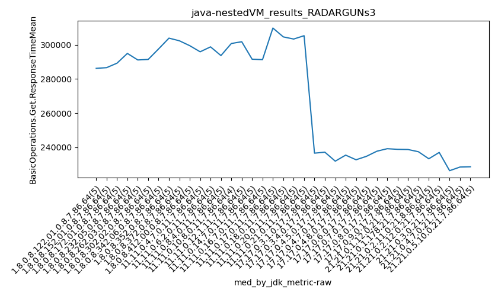
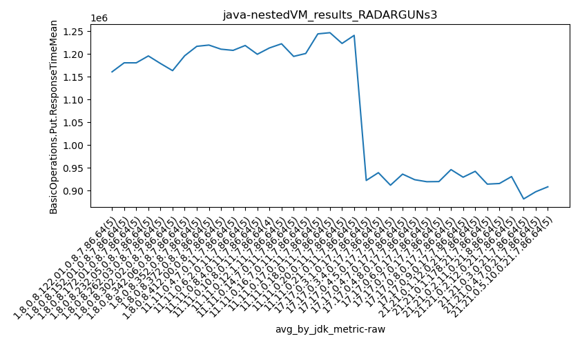

java- RADARGUNs3
Context at bottom
/home/jvanek/git/benchmarks-in-nested-virtualisation-toolchain/final_results/nestedVM_results/nestedVM_results_DACAPO
java-
RADARGUNs3
/home/jvanek/git/benchmarks-in-nested-virtualisation-toolchain/final_results/nestedVM_results/nestedVM_results_J2DBENCH
java-
RADARGUNs3
/home/jvanek/git/benchmarks-in-nested-virtualisation-toolchain/final_results/nestedVM_results/nestedVM_results_RADARGUNs3
java-
RADARGUNs3
nestedVM_results_RADARGUNs3
- nestedVM_results_RADARGUNs3 - throughput get
- nestedVM_results_RADARGUNs3 - throughput put
- nestedVM_results_RADARGUNs3 - response mean time get
- nestedVM_results_RADARGUNs3 - response mean time put
nestedVM_results_RADARGUNs3 - throughput get
Expected number of java- JDKs: 19
1st avgmed_alljdks_metric:
/home/jvanek/git/benchmarks-in-nested-virtualisation-toolchain/final_results/result_processing.py /home/jvanek/git/benchmarks-in-nested-virtualisation-toolchain/final_results/nestedVM_results/nestedVM_results_RADARGUNs3 BasicOperations.Get.Throughput= False
values: [20350, 20719, 20025, 21026, 21380, 19954, 20832, 20867, 20567, 19692, 20497, 19839, 20514, 20347, 20530, 19612, 20116, 20086, 19984, 20426, 20716, 20413, 19844, 20660, 20270, 20328, 20012, 21920, 20778, 20066, 19889, 19938, 20428, 20359, 19670, 19398, 19601, 19918, 20399, 20160, 19612, 20024, 20053, 19832, 19157, 20066, 19627, 20365, 20534, 19487, 20162, 20184, 19671, 19448, 19792, 19560, 19323, 19147, 20571, 20349, 20179, 19536, 20060, 20399, 20236, 20334, 19615, 20436, 19476, 25028, 25025, 25793, 25266, 26738, 24947, 25397, 25373, 24816, 25208, 25137, 25696, 26601, 26898, 25176, 25210, 25253, 24291, 25440, 25942, 25453, 25893, 25994, 24795, 25720]

Expected number of iterations: 5
final number of values: 94 out of 95
Pass rate: 98.9%
values: (19147, 26898, 21558.031914893618, 20365)

** accuracy from all jdks and runs
more is better
MIN: 19147
MAX: 26898
AVG: 21558.031914893618
MED: 20365
Relative differences 1:
MIN-MAX: 29.0 %
MIN-AVG: 11.0 %
MIN-MED: 6.0 %
MAX-MIN: -40.0 %
MAX-AVG: -25.0 %
MAX-MED: -32.0 %
AVG-MED: -6.0 %
stored to java-.properties. sort | uniq that!
2nd avgmed_by_jdk_metric:
values: [20700.0, 20382.4, 20345.4, 20044.8, 20380.6, 20620.8, 20056.8, 19895.2, 19735.6, 20015.8, 19866.25, 19678.6, 20104.6, 20019.4, 25570.0, 25148.2, 25901.6, 25227.2, 25571.0]

values: [20719, 20567, 20497, 20086, 20413, 20328, 19938, 19918, 19832, 20066, 20162, 19560, 20179, 20236, 25266, 25208, 25696, 25253, 25720]

values: (19678.6, 25901.6, 21540.223684210527, 20345.4)
values: (19560, 25720, 21560.21052631579, 20328)

** accuracy from all jdks where runs were avged
more is better
MIN: 19678.6
MAX: 25901.6
AVG: 21540.223684210527
MED: 20345.4
Relative differences 1:
MIN-MAX: 24.0 %
MIN-AVG: 9.0 %
MIN-MED: 3.0 %
MAX-MIN: -32.0 %
MAX-AVG: -20.0 %
MAX-MED: -27.0 %
AVG-MED: -6.0 %
stored to java-.properties. sort | uniq that!
** accuracy from all jdks where runs were medianed
more is better
MIN: 19560
MAX: 25720
AVG: 21560.21052631579
MED: 20328
Relative differences 1:
MIN-MAX: 24.0 %
MIN-AVG: 9.0 %
MIN-MED: 4.0 %
MAX-MIN: -31.0 %
MAX-AVG: -19.0 %
MAX-MED: -27.0 %
AVG-MED: -6.0 %
stored to java-.properties. sort | uniq that!
nestedVM_results_RADARGUNs3 - throughput put
Expected number of java- JDKs: 19
1st avgmed_alljdks_metric:
/home/jvanek/git/benchmarks-in-nested-virtualisation-toolchain/final_results/result_processing.py /home/jvanek/git/benchmarks-in-nested-virtualisation-toolchain/final_results/nestedVM_results/nestedVM_results_RADARGUNs3 BasicOperations.Put.Throughput= False
values: [5087, 5175, 5001, 5252, 5347, 4990, 5206, 5222, 5139, 4924, 5120, 4960, 5122, 5079, 5132, 4901, 5028, 5021, 5000, 5110, 5177, 5110, 4965, 5163, 5065, 5083, 5007, 5478, 5197, 5015, 4970, 4995, 5106, 5090, 4916, 4846, 4896, 4976, 5098, 5042, 4903, 5000, 5014, 4956, 4792, 5012, 4905, 5081, 5135, 4872, 5034, 5046, 4921, 4864, 4948, 4887, 4841, 4782, 5141, 5083, 5047, 4886, 5017, 5100, 5054, 5080, 4903, 5109, 4863, 6259, 6259, 6438, 6319, 6685, 6236, 6346, 6347, 6206, 6303, 6283, 6420, 6654, 6728, 6287, 6300, 6318, 6074, 6357, 6485, 6366, 6475, 6493, 6202, 6427]

Expected number of iterations: 5
final number of values: 94 out of 95
Pass rate: 98.9%
values: (4782, 6728, 5388.872340425532, 5090)

** accuracy from all jdks and runs
more is better
MIN: 4782
MAX: 6728
AVG: 5388.872340425532
MED: 5090
Relative differences 1:
MIN-MAX: 29.0 %
MIN-AVG: 11.0 %
MIN-MED: 6.0 %
MAX-MIN: -41.0 %
MAX-AVG: -25.0 %
MAX-MED: -32.0 %
AVG-MED: -6.0 %
stored to java-.properties. sort | uniq that!
2nd avgmed_by_jdk_metric:
values: [5172.4, 5096.2, 5082.6, 5012.0, 5096.0, 5156.0, 5015.4, 4971.6, 4933.0, 5001.0, 4966.25, 4919.8, 5026.6, 5001.8, 6392.0, 6287.6, 6474.4, 6306.8, 6392.6]

values: [5175, 5139, 5120, 5021, 5110, 5083, 4995, 4976, 4956, 5012, 5034, 4887, 5047, 5054, 6319, 6303, 6420, 6318, 6427]

values: (4919.8, 6474.4, 5384.4236842105265, 5082.6)
values: (4887, 6427, 5389.263157894737, 5083)

** accuracy from all jdks where runs were avged
more is better
MIN: 4919.8
MAX: 6474.4
AVG: 5384.4236842105265
MED: 5082.6
Relative differences 1:
MIN-MAX: 24.0 %
MIN-AVG: 9.0 %
MIN-MED: 3.0 %
MAX-MIN: -32.0 %
MAX-AVG: -20.0 %
MAX-MED: -27.0 %
AVG-MED: -6.0 %
stored to java-.properties. sort | uniq that!
** accuracy from all jdks where runs were medianed
more is better
MIN: 4887
MAX: 6427
AVG: 5389.263157894737
MED: 5083
Relative differences 1:
MIN-MAX: 24.0 %
MIN-AVG: 9.0 %
MIN-MED: 4.0 %
MAX-MIN: -32.0 %
MAX-AVG: -19.0 %
MAX-MED: -26.0 %
AVG-MED: -6.0 %
stored to java-.properties. sort | uniq that!
nestedVM_results_RADARGUNs3 - response mean time get
Expected number of java- JDKs: 19
1st avgmed_alljdks_metric:
/home/jvanek/git/benchmarks-in-nested-virtualisation-toolchain/final_results/result_processing.py /home/jvanek/git/benchmarks-in-nested-virtualisation-toolchain/final_results/nestedVM_results/nestedVM_results_RADARGUNs3 BasicOperations.Get.ResponseTimeMean True
values: [290263, 286258, 296979, 281253, 276496, 296936, 284455, 282134, 286675, 300424, 289296, 298903, 288344, 291349, 288498, 305040, 295023, 293766, 295888, 290447, 285758, 291191, 297245, 285894, 291464, 291488, 296367, 270129, 285767, 296053, 298597, 297661, 290097, 290083, 301463, 305214, 303535, 295979, 289936, 291283, 298869, 295261, 294120, 299707, 309419, 293766, 301804, 291268, 288756, 304490, 291987, 291307, 300847, 303109, 299094, 301892, 305049, 308953, 287141, 290978, 291629, 303442, 293385, 290789, 291380, 290431, 300440, 290527, 304730, 239097, 238758, 231786, 236496, 222976, 238607, 234477, 235466, 240884, 237056, 237074, 231798, 224868, 221147, 236558, 237007, 235329, 246408, 235186, 230397, 234067, 230504, 228977, 239705, 232610]

Expected number of iterations: 5
final number of values: 94 out of 95
Pass rate: 98.9%
values: (221147, 309419, 278142.9680851064, 290789)

** accuracy from all jdks and runs
more is worse
MIN: 309419
MAX: 221147
AVG: 278142.9680851064
MED: 290789
Relative differences 1:
MIN-MAX: 40.0 %
MIN-AVG: 11.0 %
MIN-MED: 6.0 %
MAX-MIN: -29.0 %
MAX-AVG: -20.0 %
MAX-MED: -24.0 %
AVG-MED: -4.0 %
stored to java-.properties. sort | uniq that!
2nd avgmed_by_jdk_metric:
values: [286249.8, 290124.8, 291278.0, 296032.8, 290310.4, 287960.8, 295580.2, 297189.4, 299475.2, 296016.8, 296812.5, 300425.8, 294044.6, 295501.6, 233822.6, 237298.0, 230289.0, 236865.4, 233172.6]

values: [286258, 286675, 289296, 295023, 291191, 291488, 297661, 295979, 298869, 293766, 300847, 301892, 291629, 291380, 236496, 237056, 231798, 235329, 232610]

values: (230289.0, 300425.8, 278339.4894736842, 291278.0)
values: (231798, 301892, 278170.6842105263, 291380)

** accuracy from all jdks where runs were avged
more is worse
MIN: 300425.8
MAX: 230289.0
AVG: 278339.4894736842
MED: 291278.0
Relative differences 1:
MIN-MAX: 30.0 %
MIN-AVG: 8.0 %
MIN-MED: 3.0 %
MAX-MIN: -23.0 %
MAX-AVG: -17.0 %
MAX-MED: -21.0 %
AVG-MED: -4.0 %
stored to java-.properties. sort | uniq that!
** accuracy from all jdks where runs were medianed
more is worse
MIN: 301892
MAX: 231798
AVG: 278170.6842105263
MED: 291380
Relative differences 1:
MIN-MAX: 30.0 %
MIN-AVG: 9.0 %
MIN-MED: 4.0 %
MAX-MIN: -23.0 %
MAX-AVG: -17.0 %
MAX-MED: -20.0 %
AVG-MED: -5.0 %
stored to java-.properties. sort | uniq that!
nestedVM_results_RADARGUNs3 - response mean time put
Expected number of java- JDKs: 19
1st avgmed_alljdks_metric:
/home/jvanek/git/benchmarks-in-nested-virtualisation-toolchain/final_results/result_processing.py /home/jvanek/git/benchmarks-in-nested-virtualisation-toolchain/final_results/nestedVM_results/nestedVM_results_RADARGUNs3 BasicOperations.Put.ResponseTimeMean True
values: [1183019, 1157325, 1195660, 1143576, 1123777, 1203057, 1151589, 1154877, 1172473, 1220261, 1170611, 1209475, 1173079, 1180213, 1168686, 1213234, 1191146, 1199044, 1202546, 1171680, 1159278, 1169718, 1213094, 1165152, 1187690, 1180341, 1196807, 1094660, 1151680, 1193099, 1204147, 1199579, 1173736, 1182678, 1219569, 1238251, 1219439, 1210334, 1177523, 1193226, 1234670, 1200808, 1199918, 1205873, 1250755, 1201240, 1222617, 1177303, 1166261, 1228740, 1198293, 1195993, 1219221, 1238615, 1212613, 1230554, 1244553, 1253876, 1169291, 1178182, 1195312, 1225458, 1200548, 1173106, 1190770, 1183432, 1228828, 1170473, 1231086, 940173, 943839, 913008, 933110, 882863, 950422, 930597, 929765, 950913, 936255, 939944, 919864, 881990, 877701, 941334, 936406, 938552, 970980, 926700, 909540, 928195, 909958, 909387, 957057, 916500]

Expected number of iterations: 5
final number of values: 94 out of 95
Pass rate: 98.9%
values: (877701, 1253876, 1122540.1170212766, 1178182)

** accuracy from all jdks and runs
more is worse
MIN: 1253876
MAX: 877701
AVG: 1122540.1170212766
MED: 1178182
Relative differences 1:
MIN-MAX: 43.0 %
MIN-AVG: 12.0 %
MIN-MED: 6.0 %
MAX-MIN: -30.0 %
MAX-AVG: -22.0 %
MAX-MED: -26.0 %
AVG-MED: -5.0 %
stored to java-.properties. sort | uniq that!
2nd avgmed_by_jdk_metric:
values: [1160671.4, 1180451.4, 1180412.8, 1195530.0, 1178986.4, 1163317.4, 1195941.8, 1207754.6, 1218404.8, 1199232.2, 1213030.5, 1222177.4, 1194521.2, 1200917.8, 922598.6, 939590.4, 912166.6, 936435.6, 924219.4]

values: [1157325, 1172473, 1173079, 1199044, 1169718, 1180341, 1199579, 1210334, 1205873, 1201240, 1219221, 1230554, 1195312, 1190770, 933110, 936255, 919864, 936406, 916500]

values: (912166.6, 1222177.4, 1123492.647368421, 1180451.4)
values: (916500, 1230554, 1123526.2105263157, 1180341)
** accuracy from all jdks where runs were avged
more is worse
MIN: 1222177.4
MAX: 912166.6
AVG: 1123492.647368421
MED: 1180451.4
Relative differences 1:
MIN-MAX: 34.0 %
MIN-AVG: 9.0 %
MIN-MED: 4.0 %
MAX-MIN: -25.0 %
MAX-AVG: -19.0 %
MAX-MED: -23.0 %
AVG-MED: -5.0 %
stored to java-.properties. sort | uniq that!
** accuracy from all jdks where runs were medianed
more is worse
MIN: 1230554
MAX: 916500
AVG: 1123526.2105263157
MED: 1180341
Relative differences 1:
MIN-MAX: 34.0 %
MIN-AVG: 10.0 %
MIN-MED: 4.0 %
MAX-MIN: -26.0 %
MAX-AVG: -18.0 %
MAX-MED: -22.0 %
AVG-MED: -5.0 %
stored to java-.properties. sort | uniq that!
/home/jvanek/git/benchmarks-in-nested-virtualisation-toolchain/final_results/nestedVM_results/nestedVM_results_SPECJBB
java-
RADARGUNs3
/home/jvanek/git/benchmarks-in-nested-virtualisation-toolchain/final_results/nestedVM_results/nestedVM_results_RADARGUNs1
java-
RADARGUNs3
/home/jvanek/git/benchmarks-in-nested-virtualisation-toolchain/final_results/nestedVM_results/nestedVM_results_JMH
java-
RADARGUNs3
pass rates:
nestedVM_results_RADARGUNs3=98.9%
Context:
- nestedVM_results
- RADARGUNs3